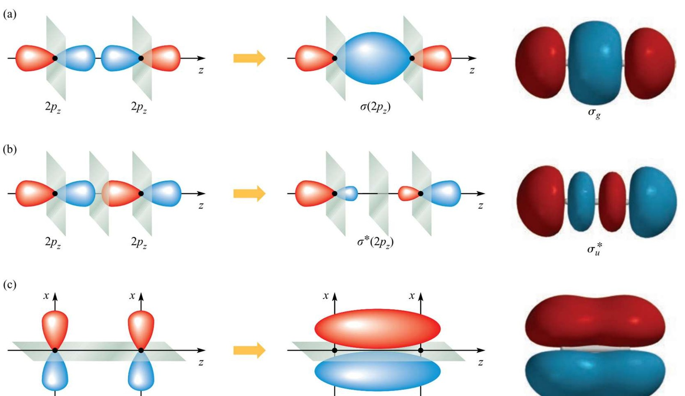

BIO105 · 第 3 章
生物分子化学与光能吸收
Chemistry of Biomolecules & Light Energy Absorption
虚线下划线为术语；悬停查看中文、英文与释义，完整词典见“术语”。
本章目录
本讲把第 1 章的原子轨道推进到分子轨道，用 HOMO/LUMO 与卷曲箭头解释生物分子的反应性，再用共轭解释色素颜色、ATP 的磷酸转移与核酸的稳定性差异。
本章要点
- 共价键分为 σ 键与 π 键；对应的反键轨道为 σ* 与 π*，填充反键轨道会削弱并最终断裂化学键。
- 分子轨道理论用“同相成键、反相成键”解释 CH4 的 sp3 与 C2H4 的 sp2 几何。
- 化学反应的本质是电子在分子之间流动，且必须有轨道重叠；卷曲箭头表示两个电子的移动（HOMO → LUMO）。
- 亲核试剂是电子给体（HOMO），亲电试剂是电子受体（LUMO，常为 σ* 或 π*）。
- 离域与共轭分散电子、稳定分子，并决定色素吸收的波长，从而决定颜色。
- ATP 通过磷酸基上的亲核取代参与生化反应；其 σ*(P–O) 是 LUMO。
- DNA 比 RNA 稳定，因为脱氧核糖缺少 2′-OH；RNA 的 2′- 与 3′-OH 在同侧，可发生分子内亲核催化，使碱性水解极快。
- NAD⁺ 在还原时接受氢负离子，NADH 在氧化时给出氢负离子。
3.1 碳的成键：σ 键与 π 键
生物分子的骨架几乎全部由碳构成。讲义以一句判断开头：碳原子能形成多样的分子。原因在于碳可以形成四个共价键，并且能与自身成链、成环，还能与其他元素成键——这一组合在周期表中极为少见。
共价键有两种基本类型。σ 键sigma bond由原子轨道沿键轴“头对头”重叠形成，电子密度集中在两核连线上，因此键较强、可绕键轴旋转。π 键pi bond由 p 轨道“肩并肩”侧向重叠形成，电子密度分布在键轴上下两侧，重叠程度较小，键较弱，且不能绕键轴旋转。
把 σ 与 π 放在一起看，一个双键由 1 个 σ 键与 1 个 π 键组成。这解释了为什么双键比单键短、强、且刚性——π 重叠一旦被扭转就会破坏，所以双键不能自由旋转。这一几何约束在第 7 章的视黄醛光异构化中会直接变成生理功能：光子把 11-cis 扭成 all-trans，分子的形状改变，进而改变蛋白构象。
L3 p.6–7
3.2 从原子轨道到分子轨道
讲义先回到原子轨道的描述方式：电子的概率可由径向分布函数描述。1s、2s、3s 的径向分布各有不同的节点结构，2p 轨道呈哑铃形。这些图形不是装饰，它们决定了两个原子靠近时哪些部分能有效重叠。
分子轨道理论molecular orbital theory的核心规则只有两条：两个原子轨道同相组合（in-phase）形成能量较低的成键轨道bonding orbital；反相组合（out-of-phase）形成能量较高的反键轨道antibonding orbital。反键轨道用星号标记：σ*（sigma star）与 π*（pi star）。
为什么必须区分成键与反键？因为电子填充的位置决定了键的强弱。把电子填入反键轨道会削弱化学键，最终导致断键——这是本讲最重要的一条结论，也是后面解释 ATP 水解、亲核取代与光化学的基础。反过来，电子从较高的非键轨道落到较低能量的成键轨道时会释放能量，例如 BH3 与 NH3 形成氨硼烷（ammonia borane）时，氮上的孤对电子从非键 sp3 轨道落入新的、能量更低的 σ 成键轨道。
讲义用 N2 的分子轨道图作为双原子分子的范例：价层 σ 与 π 轨道被成对填充，反键轨道留空，因此 N2 的键很强、分子极其稳定——这也是为什么固氮在化学上困难。


Clean vector orbital diagram: upper panel shows two s orbitals combining in phase into a sigma bonding orbital with electron density between the nuclei, and out of phase into a sigma star antibonding orbital with a node between the nuclei; lower panel shows two p orbitals overlapping head-on to give sigma and sigma star, and side-on to give pi and pi star, with the node planes marked. Energy axis on the left with bonding levels low and antibonding levels high. Flat 2D, thin 1.5 px strokes, muted slate blue and warm grey palette, white background, English labels, no cartoon, no gradient, no shadow.
L3 p.8–12
3.3 杂化、几何与刚性
价键理论能画出 Lewis 结构，却无法解释三维原子结构。甲烷的四个 C—H 键在 Lewis 式上完全等价，但只有引入杂化才能说明它们为什么指向四面体的四个顶点。讲义给出的答案是：碳的 2s 与三个 2p 组合成四个等价的 sp3 杂化轨道sp3 hybrid orbital，形成近四面体（nearly tetrahedral）排布。分子轨道理论对 CH4 给出同样的结论，只是语言不同：四个 sp3 杂化轨道与四个氢的 1s 同相组合，形成四个成键 σ 轨道。
当碳只与三个原子成键时，改用 sp2 杂化sp2 hybridization：三个 sp2 轨道在同一平面内成 120°，剩下一个未杂化的 2p 轨道垂直于该平面。这个 2p 轨道正是 π 键的来源。乙烯（C2H4）的 C=C 由 sp2–sp2 的 σ 骨架加上两个 2p 侧向重叠的 π 键构成；乙烷（C2H6）则只有 sp3–sp3 的 σ 键。
由此可以理解“旋转与刚性”的对比。乙烷的 C—C 单键是 σ 键，沿键轴旋转不改变轨道重叠，因此可以自由旋转，分子有无数构象。乙烯的 C=C 含 π 键，旋转会破坏 2p 轨道的侧向重叠，能量代价很高，因此双键是刚性的，并产生顺反异构（cis/trans）。这一条化学规则在生物体系中反复出现：视黄醛的 11-cis 与 all-trans 就是双键几何的两种状态，而把一种变成另一种需要光子提供能量。
L3 p.13–16
3.4 电子流动、HOMO/LUMO 与卷曲箭头
讲义用一句话概括反应的本质：化学反应发生在电子于分子之间流动的时候。但没有轨道重叠，电子就无处可去——所以“轨道重叠是化学反应的必要条件”。
为了判断电子往哪里流，需要两个概念。HOMOhighest occupied molecular orbital 是最高占据分子轨道，代表分子中最“松动”、最容易给出的电子；LUMOlowest unoccupied molecular orbital 是最低未占据分子轨道，代表最容易接受电子的空位。反应的方向就是 HOMO → LUMO。
据此定义两类试剂。亲核试剂nucleophile（Nu）是电子给体，用自身的 HOMO 去进攻；亲电试剂electrophile（E）是电子受体，提供 LUMO（常为 σ* 或 π*）接受电子。讲义用 BH3（sp2，缺电子）与 NH3（sp3，有孤对）生成氨硼烷作为例子：氮的孤对电子从非键 sp3 轨道流入硼的空轨道，形成新的 σ 键。
羰基（C=O）是理解生物化学反应的钥匙。氧的电负性大于碳，π 电子偏向氧，使碳带部分正电；同时 C=O 的 π* 就是 LUMO。因此羰基碳是典型的亲电中心，容易被亲核试剂进攻。讲义用一系列图示展示亲核试剂向羰基碳进攻、π 电子转入氧、形成四面体中间体的过程。
表示电子流动的符号是卷曲箭头curly arrow。讲义明确其含义：一个卷曲箭头表示两个电子的移动，箭头从电子源（HOMO）指向电子汇（LUMO）。画箭头时不能只画半个箭头表示一个电子——那在有机机理中是另一套记法，本课程不采用。
L3 p.17–26
3.5 离域与共轭
当三个或更多相邻的 p 轨道平行排列时，π 电子不再局限在两个原子之间，而是在整个体系中离域delocalization。这种连续的 p 轨道体系称为共轭conjugation。离域的后果有两个：电子被分散到更大空间，体系的能量降低、更稳定；同时最高占据与最低空轨道之间的能隙变小。
苯是最经典的例子。六个碳均为 sp2 杂化，六个垂直于环平面的 p 轨道首尾相接，形成闭合的 π 体系。因此苯不是“三个交替的双键”，而是一个离域的环状共轭系统——这也是苯特别稳定的原因。讲义用丁二烯（butadiene）展示开链共轭：四个 p 轨道形成两个成键 π 轨道与两个反键 π* 轨道，电子填充在成键轨道中。
为什么共轭在生物化学中重要？因为离域不仅稳定分子，还决定了分子吸收什么颜色的光。这一点在下一节展开。
L3 p.27–32
3.6 颜色来自共轭：番茄红素与叶绿素
讲义给出一个明确判断：色素的颜色取决于共轭。许多有机色素含有共轭体系，能吸收可见光；共轭的程度影响所吸收光的波长。共轭越长，HOMO–LUMO 能隙越小，吸收的光子能量越低（波长越长）。
两个具体数值必须记住：
- 番茄红素lycopene含 11 个共轭双键，吸收约 470 nm 的蓝绿光；
- 叶绿素chlorophyll含环状共轭体系，主要吸收蓝光与红光，因此呈现绿色。
这里的逻辑是可逆的：物体呈现的颜色，是它不吸收而反射或透过的光的颜色。番茄红素吸收蓝绿光，所以看起来是红色；叶绿素吸收蓝与红，所以看起来是绿色。考试中若问“为什么叶绿素是绿色”，答案必须落在“吸收蓝红光、不吸收绿光”上，而不是“含有镁离子”之类的无关特征。
Clean vector diagram with a horizontal visible spectrum from 400 to 700 nm and three molecular structures above it: a short conjugated chain with its absorption band in the ultraviolet, lycopene with eleven conjugated double bonds and an absorption band near 470 nm in the blue-green, and a chlorophyll porphyrin ring with two absorption bands in the blue and red. Flat 2D, thin 1.5 px strokes, muted slate blue and warm grey palette, white background, English labels, no cartoon, no gradient, no shadow.
这条原理在第 6 章的光合作用与第 7 章的视觉中都会重现：光捕获的第一步，永远是共轭体系吸收一个光子，把电子从 π 激发到 π*。
L3 p.33–34
3.7 ATP：磷酸基上的亲核取代
讲义把 ATP 放进“化学能”这一主题下处理，角度不是“ATP 是高能分子”这种笼统说法，而是具体的轨道化学：ATP 通过其磷酸基上的亲核取代参与生化反应。
磷原子连接四个氧，其中三个是磷酸酐或酯键的氧。磷–氧键的 σ*(P–O) 就是 LUMO，因此磷是亲电中心。亲核试剂（例如水、醇、或另一个分子的羟基氧）进攻磷，电子从亲核试剂的孤对进入 σ*(P–O)，随后一个磷酸基（Pi 或焦磷酸）离去。讲义用“2e⁻ 来自 O”标注这一过程，强调电子的来源是亲核试剂上的氧。
由此可以理解 ATP 为何是“能量货币”：断裂 P—O 键时，电子进入反键轨道使键削弱并断裂；产物的电荷分离被缓解、Pi 通过共振杂化被稳定、产物的水合程度更高（这三条在第 4 章展开）。ATP 本身并不“储存”能量于某个特殊的键中，而是整个反应体系的自由能差驱动了下游过程。
L3 p.36–37, p.43
3.8 核酸的化学：为什么 DNA 比 RNA 稳定
讲义给出一个精确的结构解释：DNA 比 RNA 稳定，因为它的糖缺少 2′-羟基。核糖有三个羟基（2′、3′、5′），脱氧核糖只有两个（3′、5′），正是 2′-OH 的存在使 RNA 易于被水解。
机制是分子内亲核催化。在 RNA 中，2′-OH 与 3′-OH 位于环的同一侧（同一面），空间上彼此靠近。2′-氧可以作为亲核试剂进攻相邻的磷酸二酯键的磷原子，形成一个五元环状的环状磷酸中间体，同时把 RNA 链切断。因为反应是分子内的，有效浓度极高，所以碱性水解异常迅速。DNA 没有 2′-OH，无法形成这个环状中间体，只能依赖分子间的慢速水解，因此稳定得多。
这一差别有深远的生物学后果：DNA 适合长期储存遗传信息，RNA 适合短期的信息传递与催化。讲义在第 2 章的 RNA 世界中已经铺垫过这一点——早期生命用 RNA，后来把储存职能交给了更稳定的 DNA。
讲义还列出五种核碱基及其读音：胞嘧啶（cytosine）、胸腺嘧啶（thymine）、尿嘧啶（uracil）、腺嘌呤（adenine）、鸟嘌呤（guanine）。碱基上的氮与羰基氧参与氢键配对；碱基环本身是共轭体系，因此能吸收紫外光。讲义用 σ*(C–O) 与 σ*(Me–S) 标注碱基与修饰基团上的亲电位置，说明这些位点同样遵循“电子流入 LUMO”的规则。
Clean vector mechanism diagram of RNA alkaline hydrolysis: a ribose ring with 2-prime and 3-prime hydroxyl groups on the same face, a curved arrow from the 2-prime oxygen to the adjacent phosphorus atom, a five-membered cyclic phosphate intermediate shown in an inset, and the cleaved RNA strand on the right. A side panel contrasts deoxyribose lacking the 2-prime hydroxyl and therefore unable to form the cyclic intermediate. Flat 2D, thin 1.5 px strokes, muted slate blue and warm grey palette, white background, English labels, no cartoon, no gradient, no shadow.
L3 p.38–40
3.9 电子载体：NAD⁺/NADH 与乳酸脱氢酶
讲义用乳酸脱氢酶（lactate dehydrogenase, LDH）作为收束例子，把“羰基 π* = LUMO”这条规则接到代谢上。LDH 催化丙酮酸与乳酸之间的互变，同时把 NADH 氧化为 NAD⁺（或反向）。反应的中心步骤是氢负离子（H⁻，两个电子加一个质子）的转移：NAD⁺ 在还原时接受氢负离子，NADH 在氧化时给出氢负离子。
为什么是“氢负离子”而不是“氢原子”或“质子”？因为转移的单位带着两个电子。这与卷曲箭头表示两个电子的规则一致：一个箭头、两个电子、一次氢负离子转移。NAD⁺ 的烟酰胺环（nicotinamide ring）是电子受体，接受氢负离子后环的共轭体系由芳香性变为非芳香性，吸收光谱随之改变——这也是实验中追踪 NADH 生成的方式。
讲义最后用小节总结把全章收束为七条：分子轨道分为成键（σ、π）与反键（σ*、π*）；填充反键轨道削弱并断裂化学键；卷曲箭头表示两个电子从 HOMO 移向 LUMO；亲核试剂是电子给体（HOMO），亲电试剂是电子受体（LUMO，常为 σ* 或 π*）；离域与共轭分散电子、稳定分子，并解释颜色与荧光；ATP 通过磷酸基上的亲核取代参与生化反应；NAD⁺ 接受氢负离子、NADH 给出氢负离子。
L3 p.43–45